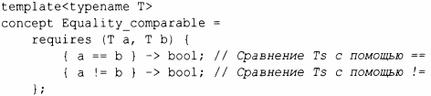
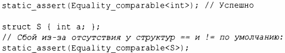
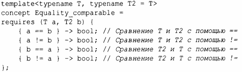
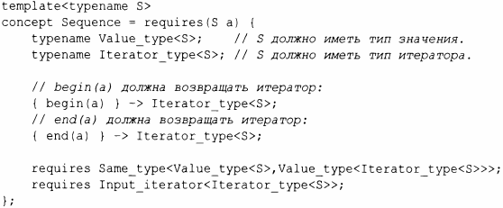

⇐7.2.3 Корректный код 7.3 Обобщенное программирование⇒
7.2.4. Оnредеnение концептов
В конечном итоге мы ожидаем, что сможем найти полезные концепты, такие как Sequence и Arithmetic, в библиотеках (включая стандартную библиотеку). Техническая спецификация [37] в настоящее время уже предлагает набор для ограничений алгоритмов стандартной библиотеки (§12.7). Однако простые концепты определить несложно.
Концепт - это предикат времени компиляции, указывающий, каким образом можно использовать один или несколько типов. Рассмотрим сначала один из простейших примеров:
Equality_comparable - это концепт, который мы используем для обеспечения того, что значения можно сравнивать на равенство и неравенство. Мы просто говорим, что для двух значений данного типа они должны быть сравниваемы с использованием операторов == и !=, и результат этих операций должен быть преобразуем в bool. Например:
Определение концепта Equality_comparable в точности эквивалентно описанию на естественном языке, и не более того. Значение concept всегда имеет тип bool.
Определение Equality_comparable для негомогенных сравнений практически столь же простое:
Фрагмент typename Т2=Т гласит, что если мы не оnределяем второй аргумент шаблона, то Т2 будет тем же самым, что и Т; Т nредставляет собой аргумент шаблона по умолчанию.
Мы можем nротестировать Equality_comparaЬle следующим образом:
В качестве более сложного nримера рассмотрим nоследовательность:

Чтобы тип S являлся Sequence, он должен nредоставить Value_type (тиn его элементов) и Iterator_type (тип его итераторов, см. §12.1). Он также должен гарантировать, что существуют функции begin () и end (),которые возвращают итераторы, так как это идиоматично для контейнеров стандартной библиотеки (§ 11.3). Наконец, Iterator_type в действительности должен быть input_iterator с элементами того же тиnа, что и элементы S.
Наиболее сложными nонятиями для оnределения являются те, которые nредставляют фундаментальные языковые концеnции. Следовательно, лучше исnользовать набор из установленной библиотеки (§ 12. 7).